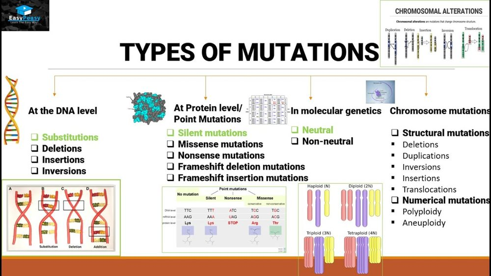
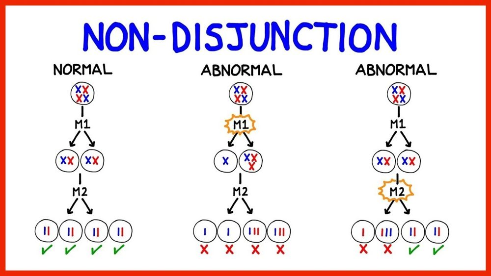
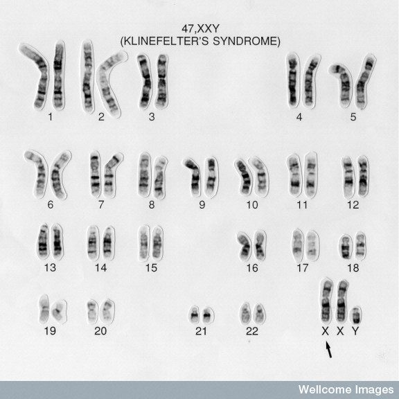
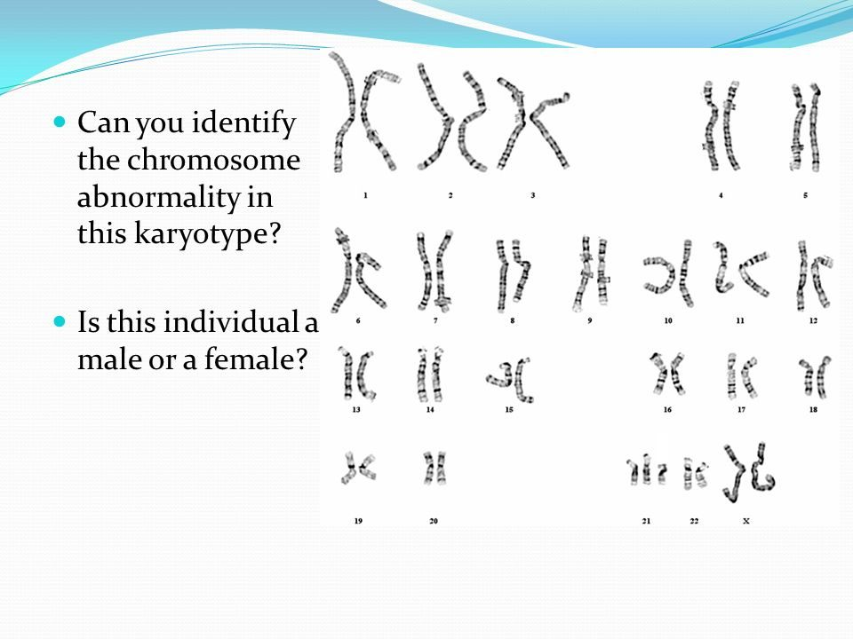

Karyotypes
A karyotype (karyogram) is a photograph of the chromosomes from a single cell, arranged in homologous pairs from longest to shortest, with the sex chromosomes at the end. It shows the number and appearance of the chromosomes.
- Humans have 23 different chromosomes: autosomes numbered 1–22, and the sex chromosomes X and Y.
- Males are XY; females are XX. A pair of each gives 2 × 23 = 46 in total.
- Variations in a karyotype can show a genetic disorder.
- The sequence of genes can't be seen in a karyogram (that needs DNA sequencing).

Chromosomal variations
A cell can have too many, too few or broken chromosomes. Most chromosomal variations come from mistakes when sex cells are made, so every cell of the person has the variation.
Non-disjunction is the failure of homologous chromosomes (in anaphase I) or sister chromatids (in anaphase II) to separate properly. It can give a gamete an extra or missing chromosome.



- Is this individual male or female?
- The abnormality is three copies of chromosome (trisomy 13, Patau syndrome).
There are two X chromosomes and no Y, so the individual is female. Chromosome 13 has three copies. Babies with trisomy 13 have many serious congenital abnormalities.